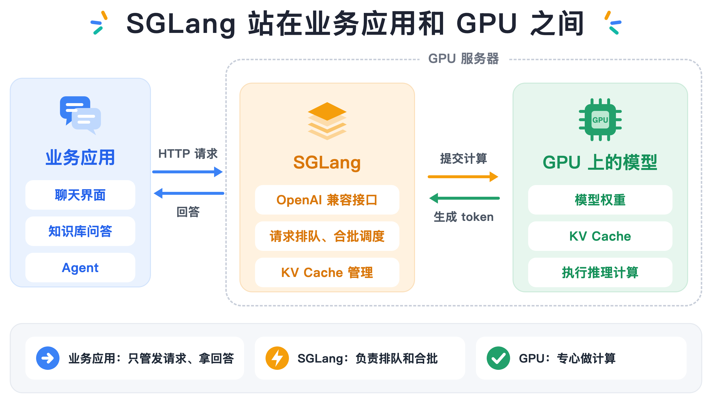
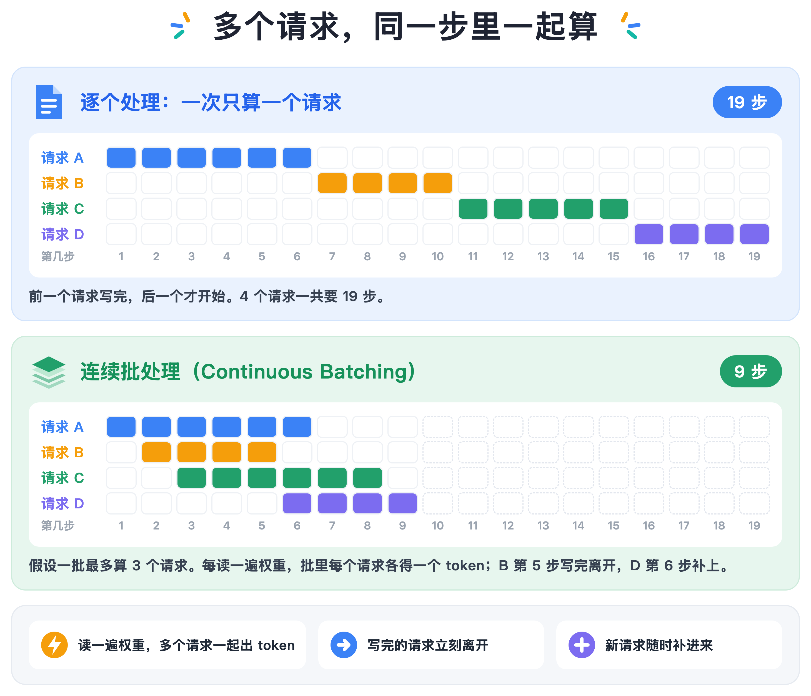
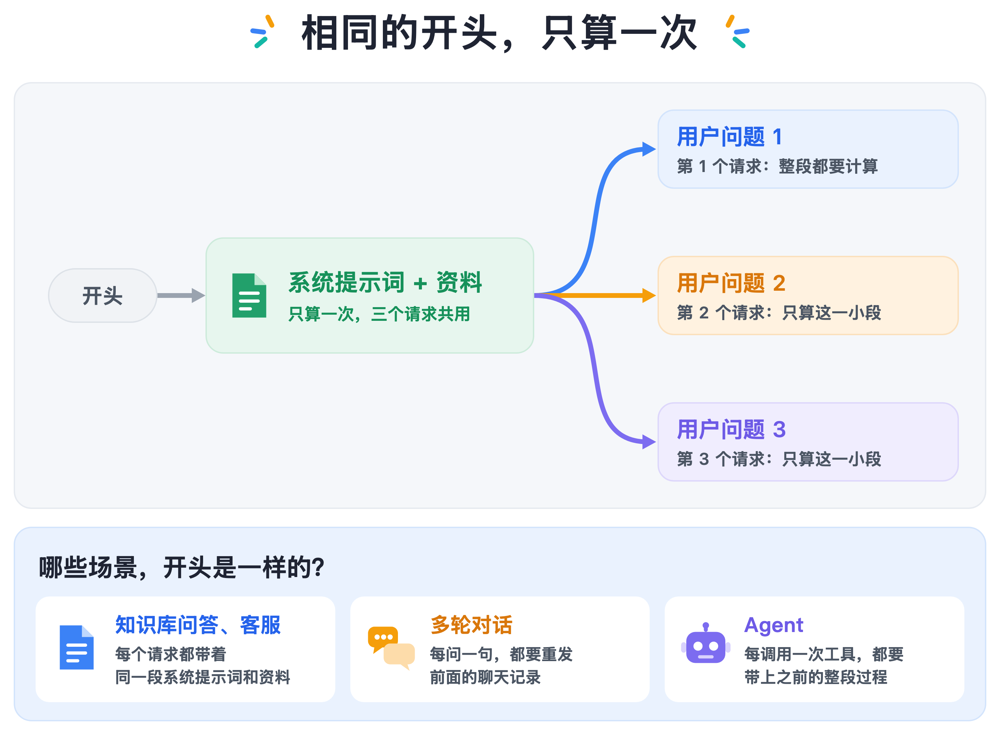
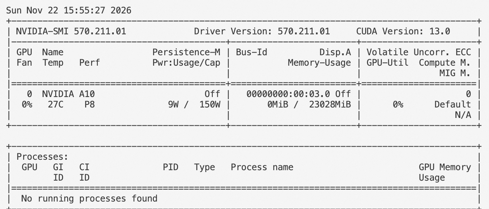
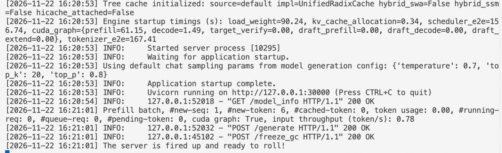
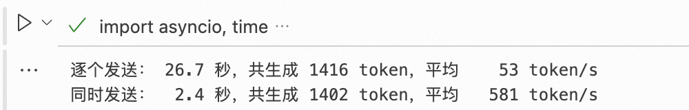

作者：SGLang Team 
在模型推理中，如果我们仅考虑最简单的情景，即在自己的 GPU 上跑起来以后，自己问几句，回答都挺快。可一旦接进业务，将会是完全不同的场景。同一时间可能有成百上千人在提问，Agent 完成一个任务还要连续调用模型十几次。SGLang就是为这样的场景而诞生的大规模推理框架，把模型部署成稳定，高效的服务；提供低成本，高质量的token。
本章介绍 SGLang 的基本用法：在魔搭 Notebook 的免费 GPU 上部署一个 4B 模型，用 Python 调用它，再看看多人同时提问时，SGLang 能快多少。
SGLang 是一个开源的大模型推理框架。它把模型加载到 GPU 上，对外提供和 OpenAI API 兼容的接口。业务应用只需要发请求、拿回答，请求怎么排队、怎么在 GPU 上计算，都交给 SGLang。

SGLang 已经在生产环境中大规模使用。使用它的既有 NVIDIA、AMD、Google、Meta、Microsoft AI、LinkedIn 这样的科技公司，也有阿里云、腾讯云、百度、美团、蚂蚁集团、火山引擎、科大讯飞等国内厂商，还有清华大学、斯坦福、UC Berkeley 等高校。
和直接用 transformers 一条一条地生成相比，SGLang 主要在两件事上下了功夫。
一是把同时到达的请求合在一起算。模型每生成一个 token，都要把整个模型的权重从显存中读一遍。只服务一个请求时，读一遍只算出一个 token，GPU 大部分时间都在等数据。SGLang 会把正在生成的多个请求组成一批，读一遍权重，给批里的每个请求各算出一个 token；有请求写完就离开，新请求随时加入。这种做法叫作连续批处理（Continuous Batching）。

二是相同的开头只算一次。实际业务里，很多请求的开头是一样的：知识库问答、客服的每个请求都带着同一段系统提示词和资料；多轮对话每问一句，都要把前面所有的聊天记录重新发一遍；Agent 每调用一次工具，又要把之前的整段过程再发给模型。如果每次都从头计算，大部分算力都花在了重复的内容上。
SGLang 的做法是 RadixAttention：模型处理输入时算出的中间结果叫 KV Cache，SGLang 请求结束后不急着丢掉，而是按文本前缀把它们组织成一棵基数树（Radix Tree）。开头相同的请求共用树上的同一段枝干，到内容开始不同的地方再分叉。新请求进来时，先沿着树找到和自己开头相同的最长部分，这部分直接复用，只计算后面新增的内容。对话轮数越多、共享的提示词越长，省下的计算就越多，首字出来得也越快。

RadixAttention 是 SGLang 论文（NeurIPS 2024）提出的核心技术之一，在 SGLang 中默认开启，不需要改任何代码。
效果有多明显？我们用 Qwen3-4B-Instruct-2507 做过一次实测：单张 H200，精度 BF16，回放两段 AI 编程助手的真实工作轨迹（来自 SemiAnalysis 公开的 AgentX 数据集，各取前 8 条请求，输入长度缩短为原来的 1/16），共 16 次请求，2 个会话并发。对照组是开启了连续批处理和前缀缓存的 Hugging Face Transformers serve。
服务 | 完成用时 | 输出吞吐 | 平均首字延迟 | 前缀命中率 |
|---|---|---|---|---|
Hugging Face Transformers serve | 44.98 秒 | 37.3 token/s | 128.4 ms | 81.9% |
SGLang | 3.70 秒 | 453.7 token/s | 27.5 ms | 85.1% |
同样的模型、同样的 GPU，换成 SGLang，吞吐和延迟都相差了一个数量级。这是一次小规模测试，只跑了一轮，也没有评测回答质量，但足够说明推理框架的作用。
1）按照第 4 章的方法，打开我的 Notebook。启动 GPU 环境之前，先在「当前镜像版本」的下拉框里选择 ubuntu22.04-cuda13.0.3-py312-torch2.13.0 开头的镜像：SGLang 最新版需要 CUDA 13，旧镜像是 CUDA 12.1。魔搭的免费 GPU 是一张 NVIDIA A10，显存 24GB，运行本章的 4B 模型够用。
2）实例启动后，点击「查看」进入开发页面，打开一个终端，执行下面命令查看 GPU：
nvidia-smi能看到 NVIDIA A10 和 23028MiB 显存，右上角的 CUDA Version 是 13.0，说明环境没问题。如果这里显示的是 12.x，说明选的是旧镜像，回到实例列表换成 CUDA 13.0 的镜像再启动。

3）单独建一个 Python 环境，然后安装 SGLang：
python3 -m venv /root/sglang-env
source /root/sglang-env/bin/activate
pip install --pre sglang modelscope魔搭镜像里的 pip 已经配置好阿里云的镜像源，下载很快，整个安装大约 5 分钟。环境放在本地盘的 /root 下，而不是持久化目录 /mnt/workspace：/mnt/workspace 是网络存储，SGLang 依赖的 PyTorch、CUDA 库有上万个小文件，装到这里要二十分钟以上。代价是实例关闭后环境会被清掉，下次启动要重新执行一遍上面三行命令。
安装完成后，执行 sglang version，能打印出版本号（我们测试时是 0.5.23），说明安装成功。安装遇到问题时，以 SGLang 官方安装文档 为准。
1）本章以 Qwen/Qwen3-4B-Instruct-2507 为例，BF16 权重约 8GB。在终端执行下面命令，把模型下载到持久化目录，实例重启后不用重新下载。在魔搭实例里下载很快，我们测试时不到一分钟：
modelscope download --model Qwen/Qwen3-4B-Instruct-2507 \
--local_dir /mnt/workspace/models/Qwen3-4B-Instruct-25072）启动 SGLang 服务。服务会一直运行，放在 Notebook 单元格里会占住内核，所以在终端中执行：
sglang serve /mnt/workspace/models/Qwen3-4B-Instruct-2507 \
--served-model-name qwen3-4b \
--host 127.0.0.1 --port 30000 \
--context-length 8192 \
--mem-fraction-static 0.8--served-model-name 是调用时使用的模型名；--context-length 限制单个请求的最大长度，设小一些可以给并发请求留出更多显存；--mem-fraction-static 是 SGLang 预先占用的显存比例，用来存放模型权重和 KV Cache。
启动时 SGLang 会先加载权重、分配 KV Cache，再做一轮预热，在 A10 上大约需要 3 分钟。日志中出现下面这一行，说明服务启动成功：
The server is fired up and ready to roll!
这时另开一个终端执行 nvidia-smi，会看到显存已经用掉 19GB 多，这是 SGLang 按 --mem-fraction-static 预先分配的，属于正常现象。
服务启动后，在开发页面新建一个 Notebook，内核选择 Python 3。魔搭镜像里已经装好了 OpenAI 的 Python 客户端，直接运行下面的测试代码：
from openai import OpenAI
client = OpenAI(base_url="http://127.0.0.1:30000/v1", api_key="EMPTY")
response = client.chat.completions.create(
model="qwen3-4b",
messages=[
{"role": "system", "content": "你是一个有帮助的中文助手。"},
{"role": "user", "content": "请用三句话介绍一下杭州。"},
],
temperature=0.2,
max_tokens=512,
)
print(response.choices[0].message.content)base_url 指向刚才启动的服务，model 填启动时设置的模型名。本地服务不校验密钥，api_key 填一个非空字符串即可。
结果显示如下：
聊天界面一般会边生成边显示，只需要加上 stream=True：
stream = client.chat.completions.create(
model="qwen3-4b",
messages=[{"role": "user", "content": "请用三句话介绍一下杭州。"}],
max_tokens=512,
stream=True,
)
for chunk in stream:
if chunk.choices and chunk.choices[0].delta.content:
print(chunk.choices[0].delta.content, end="", flush=True)下面准备 16 个问题，分别用两种方式发送：一种是等上一个回答完成再发下一个，另一种是 16 个请求同时发出。代码如下：
import asyncio, time
from openai import AsyncOpenAI
aclient = AsyncOpenAI(base_url="http://127.0.0.1:30000/v1", api_key="EMPTY")
provinces = ["浙江", "四川", "云南", "广东", "山东", "陕西", "湖南", "福建",
"江苏", "河南", "湖北", "安徽", "江西", "贵州", "山西", "甘肃"]
questions = [f"用三句话介绍{p}省的特色美食。" for p in provinces]
async def ask(q):
r = await aclient.chat.completions.create(
model="qwen3-4b", messages=[{"role": "user", "content": q}],
max_tokens=256, temperature=0)
return r.usage.completion_tokens
async def one_by_one():
return [await ask(q) for q in questions]
async def all_at_once():
return await asyncio.gather(*(ask(q) for q in questions))
for name, run in [("逐个发送", one_by_one), ("同时发送", all_at_once)]:
start = time.perf_counter()
tokens = sum(await run())
sec = time.perf_counter() - start
print(f"{name}：{sec:5.1f} 秒，共生成 {tokens} token，平均 {tokens / sec:5.0f} token/s")结果显示如下：

两种方式生成的 token 数差不多，逐个发送用了 26.7 秒，同时发送只用了 2.4 秒，每秒生成的 token 数从 53 涨到了 581。16 个人同时提问并不会慢 16 倍，反而整体快了十倍多，这就是前面讲的连续批处理在起作用：多个请求共享同一次计算，GPU 的算力被用得更充分。
我们还在一张数据中心级的 NVIDIA B300 上，用同一个模型、同一份代码跑了这个测试，两张卡的结果放在一起对比：
GPU | 逐个发送 | 同时发送 | 提速 |
|---|---|---|---|
NVIDIA A10（魔搭免费 GPU） | 26.7 秒，53 token/s | 2.4 秒，581 token/s | 约 11 倍 |
NVIDIA B300 | 3.5 秒，391 token/s | 0.7 秒，2005 token/s | 约 5 倍 |
B300 的算力和显存带宽都高得多，逐个发送已经比 A10 快 7 倍多。16 个请求还远不足以让 B300 满载，所以同时发送的提速倍数反而比 A10 小。换到哪张卡上，规律都一样：同时到达的请求越多，SGLang 合在一起算的收益越大。
启动时提示显存不足。把 --mem-fraction-static 调低到 0.7 左右，或者把 --context-length 调小；模型本身放不下时，换更小的模型或量化版本，可以参考第 13 章。
启动时出现 CUDA driver version is insufficient 等 CUDA 报错。通常是实例用的是 CUDA 12.1 的旧镜像。关闭实例，在「当前镜像版本」里换成 CUDA 13.0 的镜像，重新启动后再安装。
安装很慢，或者一直卡住不动。确认用的是镜像自带的 pip。uv 等工具默认访问 pypi.org，在魔搭实例里会非常慢。另外不要把环境建在 /mnt/workspace 下，原因见上文。
重启实例后提示找不到 sglang 命令。环境建在本地盘，实例关闭后会被清掉，重新执行一遍安装命令即可。模型在 /mnt/workspace 下，不需要重新下载。
启动时出现 FlashInfer 相关报错。在启动命令中加上 --attention-backend triton --sampling-backend pytorch，换用其他实现。
提示 address already in use。端口被占用，通常是之前的服务还在运行。停掉旧服务，或者换一个端口，调用代码中的端口同步修改。
实验结束后，在启动服务的终端按 Ctrl + C 停止 SGLang，再回到 Notebook 页面停止 GPU 实例。只关闭浏览器页面，并不会停止云端的实例。
想换其他模型或硬件，可以参考 SGLang Cookbook，选好 GPU 型号、模型大小和精度，页面会生成对应的启动命令。想了解推理框架内部的原理，可以看 Datawhale 的开源课程 zero-to-sglang。
此章节所涉及的全部实验过程，具体可参照：https://modelscope.cn/gallery/Ccyest/sglang-serving